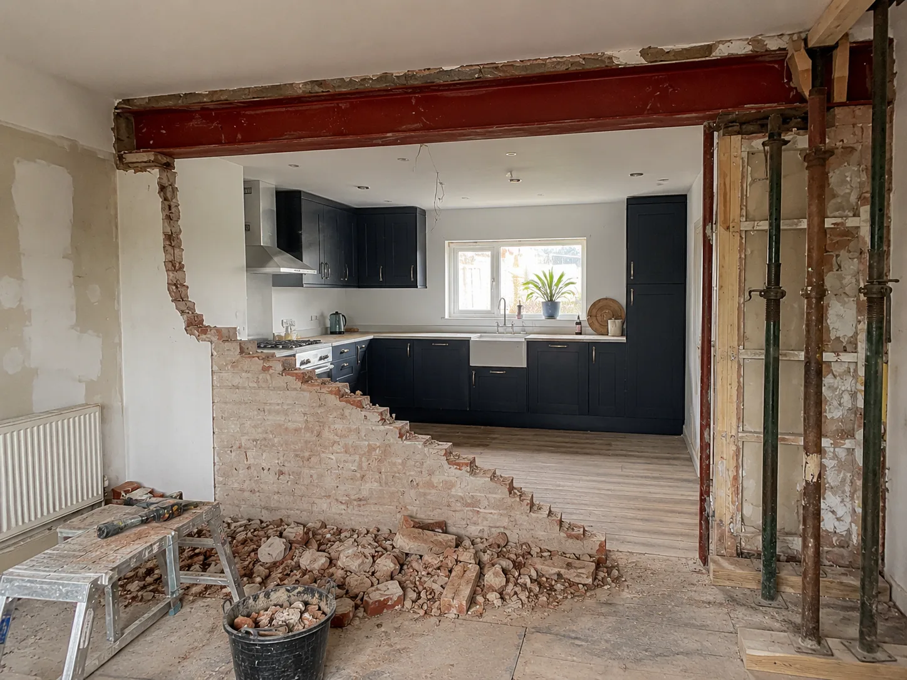
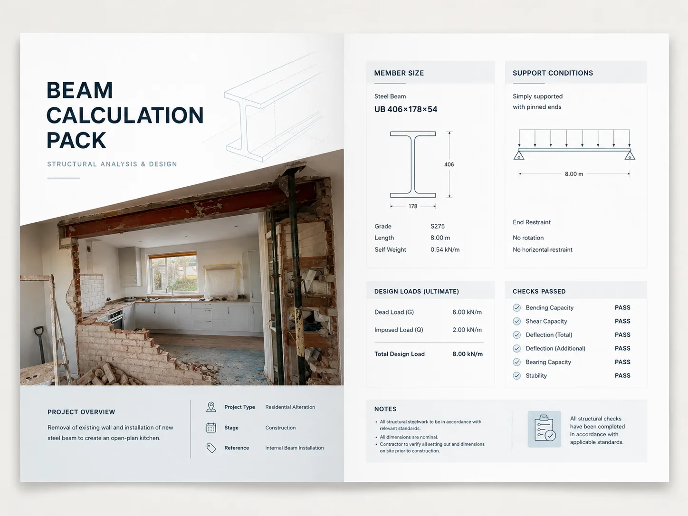
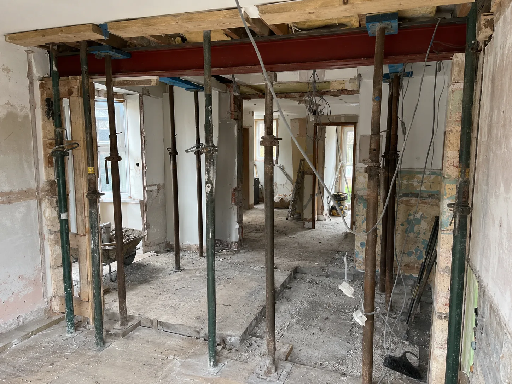
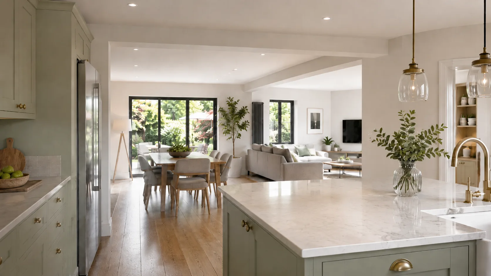

Removing a load-bearing wall
Taking out a wall that carries floor, roof or wall loads above. Calculations confirm the beam and supports needed to carry those loads safely.
Structural calculations for wall removals, knock-throughs, steel beams, extensions and Building Control approval across South West London.
Chartered structural engineer support for RSJ, steel beam and load-bearing wall calculations.
Panoptic Design provides structural engineering support for residential and property projects, including calculations for Building Control and builder use.

If you are planning to take out a wall, open up a kitchen or install a steel beam, the first job is working out what the structure above actually needs. Tell us about the project and we will advise whether structural calculations, drawings or a site visit are the right next step — including when a builder has asked you for the calculations before they can start, and what Building Control will be looking for.

Most of these projects involve removing or altering something that holds up part of the building. When that happens, structural calculations confirm the new support is sized correctly and safe.
Taking out a wall that carries floor, roof or wall loads above. Calculations confirm the beam and supports needed to carry those loads safely.
Opening up the ground floor by combining rooms usually means removing structure. We calculate the beam and bearings required for the new opening.
Sizing the right RSJ or steel beam for the span and load, with the connections and padstones or supports it needs at each end.
Forming a new opening between two rooms, such as a lounge and dining room. We work out whether the wall is load-bearing and what support the opening needs.
Rear, side or loft work that changes how loads travel through the building. Calculations cover new beams, lintels and altered load paths.
When your project needs sign-off, Building Control will want structural calculations for the beams and supports involved. We prepare them for submission.
If your builder or architect has asked for “the calcs” or a beam size, we provide the structural calculations they need to price and build the work.
Many wall removal projects start with the same question: what structural support is needed before the space can be opened up safely?

We scale the work to your project and give practical guidance for homeowners, builders and property professionals. Tell us what you are planning and we will be clear about what is actually needed.
Sizing the right RSJ for the span and load, with the supports and connections it needs at each end.
Structural calculations for steel beams carrying floor, roof or wall loads, checked for strength and deflection.
Establishing whether a wall is load-bearing and what it carries, so you know what removing or altering it involves.
Structural calculations for removing a load-bearing wall or forming a knock-through, covering the beam and its bearings.
Calculations prepared in a format suitable for Building Control approval for the beams and supports in your project.
Where a project benefits from them, supporting structural drawings to sit alongside the calculations for your builder or Building Control.
A simple, low-fuss path from first enquiry to the information your builder, architect or Building Control needs. It follows the same measured structural engineering process we use across our projects.
Tell us about the project
Send a short description of what you are planning — the wall you want to remove, the opening you want to form or the beam your builder has asked for — along with your postcode.
Share photos, plans or measurements if available
Anything helps: photos of the wall, a floor plan, rough measurements or notes from your builder or architect. If you do not have these yet, that is fine — we will tell you what we need.
We assess what calculations or inspection may be needed
We review what you have sent and advise on the right next step, whether that is calculations, drawings or a closer look. In some cases, a site visit may be needed before calculations can be prepared.
You receive what you need to move forward
You receive the information needed for your builder, architect or Building Control, set out clearly so the project can move forward safely and correctly.
Panoptic Design helps homeowners, builders and property professionals across South West London, including Putney, Wandsworth, Fulham, Wimbledon, Richmond and Hammersmith.
We also cover the wider London area where suitable. Send your postcode with a short description of the project and we will confirm whether we can help and what the next step looks like.
A measured, practical approach for people who want a structural engineer to confirm the safest way forward — not to be sold more than they need.
Structural calculations and advice for RSJs, steel beams, load-bearing walls and the openings created by removing them.
Real experience with the kinds of wall removals, knock-throughs and extensions homeowners and builders take on across London.
Plain explanations of what is load-bearing, what calculations are needed and what your builder or Building Control will be looking for.
We work alongside homeowners, builders, architects and property professionals so everyone has the information they need.
Our aim is to help your project move forward safely and correctly, with the right calculations and advice at the right time.
The payoff: the wall gone, the steel doing its job, and an open-plan space that Building Control has signed off.

If yours is not here, send it via the form or on WhatsApp. We read every enquiry.
If a wall carries load from the floor, roof or wall above, then yes — you need a structural engineer to size the beam and supports that replace it, and Building Control will usually want to see those calculations. If you are not sure whether your wall is load-bearing, send us a few details and we will help you work it out before any work is planned.
Normally, yes. An RSJ has to be sized for the span it crosses and the loads it carries, and the supports at each end need to be adequate. Structural calculations confirm the correct beam and supports, and they are typically required for Building Control approval. Tell us the rough opening size and what is above, and we will advise on what is needed.
In most cases where a beam is being installed, Building Control will want structural calculations showing the beam is correctly sized and supported. We prepare steel beam calculations in a format suitable for submission. The exact requirements can vary, so it is worth confirming early — we can help you understand what your project needs.
Yes — this is one of the most common reasons people get in touch. If your builder has asked for “the calcs” or a beam size before they can price or start the work, we provide the structural calculations they need. Share whatever your builder has told you, along with photos or measurements if you have them, and we will take it from there.
Yes. Putney, Wandsworth, Fulham, Wimbledon, Richmond, Hammersmith and the wider South West London area are part of our regular coverage, and we cover the wider London area where suitable. Send your postcode with a short description of the project and we will confirm whether we can help.
Sometimes. Clear photos, a floor plan and good measurements can be enough for some projects, and they are always a helpful starting point. In other cases, a site visit may be needed before calculations can be prepared — for example, to confirm what a wall is carrying or how loads travel through the building. Send what you have and we will tell you honestly what is needed.
It depends on the project and what you already have to hand, but we aim to respond to enquiries promptly and to be clear about realistic timescales once we understand the scope. Tell us your situation, including any deadline you are working to, and we will let you know how quickly we can help.
Unedited Google reviews from wall-removal and beam projects: designs that hold up on site, and drawings builders can actually work from.
“I found Vijay for a project to remove a load-bearing wall. His design is second to none. The steel guys were also impressed with what he had drawn up.”
“Superb engineer. Very useful with creative problem-solving and always provides great detailed drawings. Vijay is always on my list of go-to guys.”
“One of the best experiences we’ve had with a structural engineer. Professionalism, depth of knowledge, and the ability to provide practical solutions. We’ve been in the construction industry for over two decades.”
Three quick steps: the wall, the property, your details. Your answers arrive with the enquiry so we can reply with the right information first time. Prefer to send photos and plans directly? Use WhatsApp.
Builder asked for calculations? Send the wall details, postcode and any photos, and Panoptic Design will confirm the next step.
Prefer to skip the questions? Email info@panopticdesign.co.uk or enquire on WhatsApp.
Best if you already have photos, plans, measurements or a builder asking for calculations. Add your postcode first, then send photos in WhatsApp.
Send your postcode, photos or plans today and we’ll confirm the right next step.